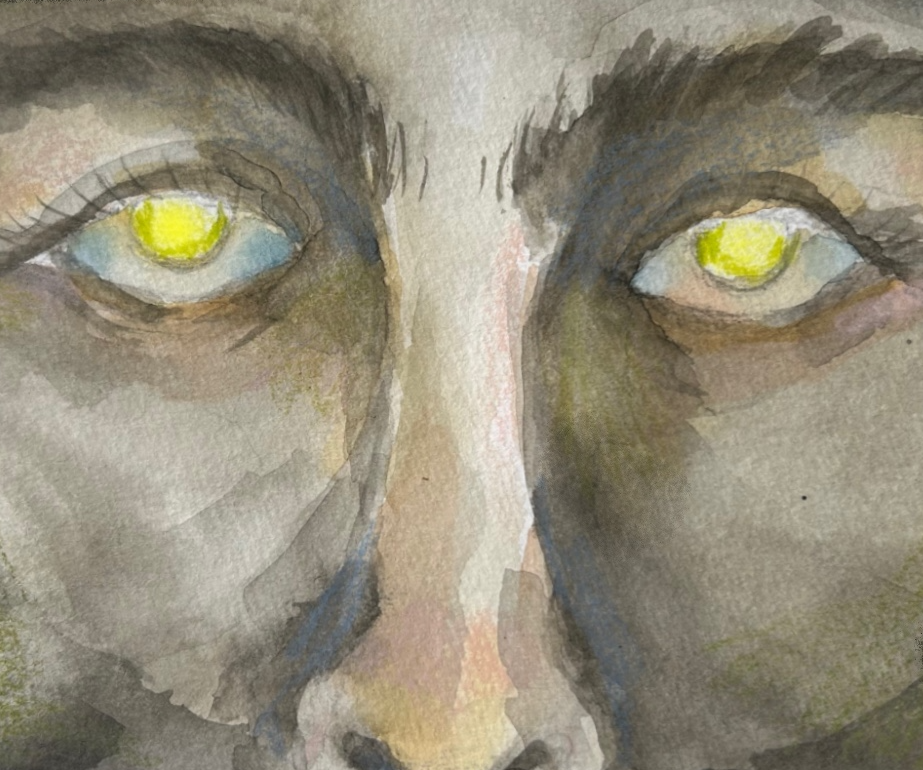
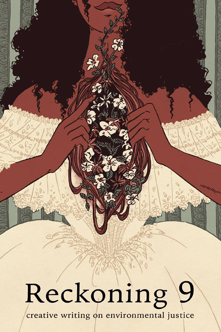
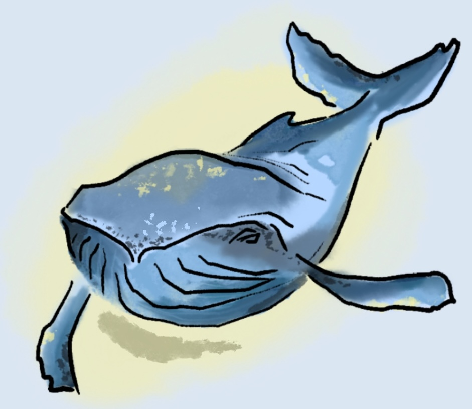
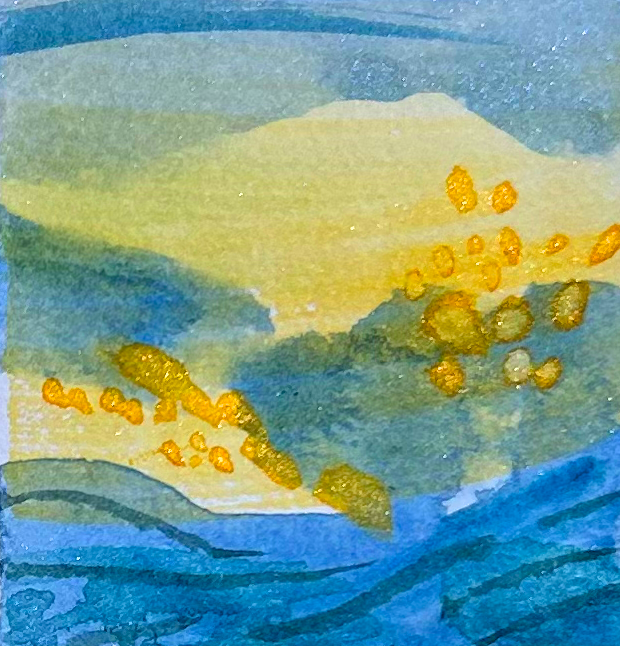

I write short fiction and mixed-media stories about wild things,
places from dreams, and weird earworms about what it means to exist
and stuff.
I read for Reckoning Magazine,
a literary magazine on environmental justice literary, and I'm working
on a historical fantasy novel inspired by the
Heroic Age of Antarctic Exploration
(with women).
Sometimes I post on my
Substack, mostly
unstructured thoughts on craft and creativity.
Publications

Night Creature. The Quarter(ly). Vol XII, 2025
Graphic poem. Mixed media: watercolor, pencil, digital.

New Niches. Reckoning Magazine. Issue 9, 2025.
Short story, climate fiction

Born a Whale. Dog Throat Journal. April 2025.
Flash fiction

The Fermi Paradox. Gaslamp Pulp. Volume II, 2025.
Short story, science fiction